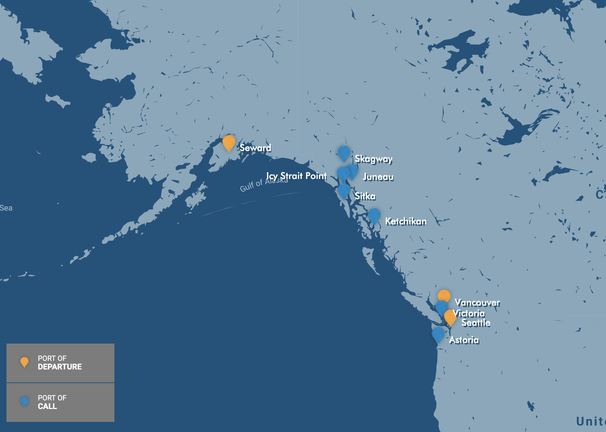

<container>
   <row>
      <columns small="12" large="5">
         <spacer size="20"></spacer>
         <p class="mapHeader">
            4-day Bahamas & Cuba from Miami<span>
               Norwegian Sky | Departs Monday
            </span>
         </p>
         
         <spacer size-"4"></spacer>
         <p class="sched">Sailing Dates: May 1, 8, 22 & 29, 2017</p>
      </columns>

      <columns small="12" large="7">
         <ul class="perks">
            <li>Includes an overnight in Havana for an evening of unforgettable cultural experiences in the historic city.</li>
            <spacer size="5"></spacer>
            <li>Havana is also known as “Ciudad de las Columnas” or City of Columns, which you’ll discover while strolling</li>
            <spacer size="5"></spacer>
            <li>Located in Old Havana, Cathedral of Havana is Cuba’s most famous cathedral. Started by the Jesuits in 1748, it was finished by the city in 1777.</li>
            <spacer size="5"></spacer>
            <li>Dine on traditional Cuban fare such as ropa vieja (shredded beef with stewed vegetables), fried plantains, black beans, rice and, of course, a classic Cuban mojito.</li>
            <spacer size="5"></spacer>
            <li>Free Open Bar includes a variety of premium spirits, cocktails, wines by the glass and bottled or draft beer up to $11 on board and on Great Stirrup Cay. Non-alcoholic beer is also included.</li>
         </ul>
      </columns>
   </row>
</container>
